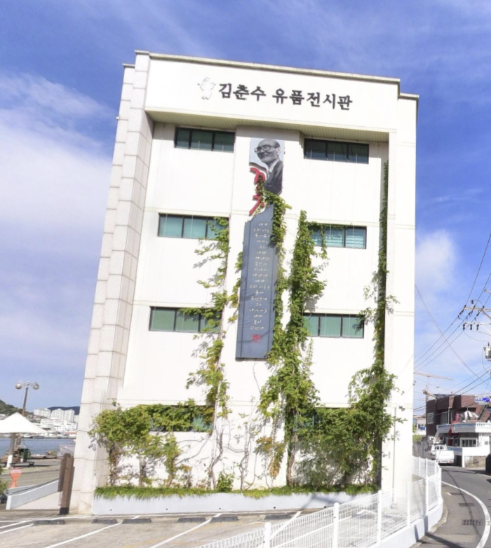
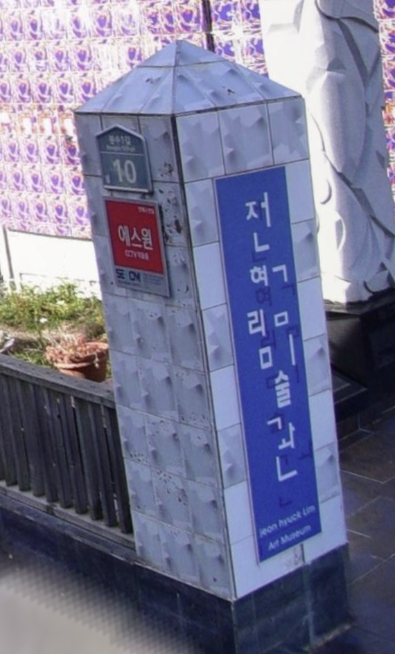
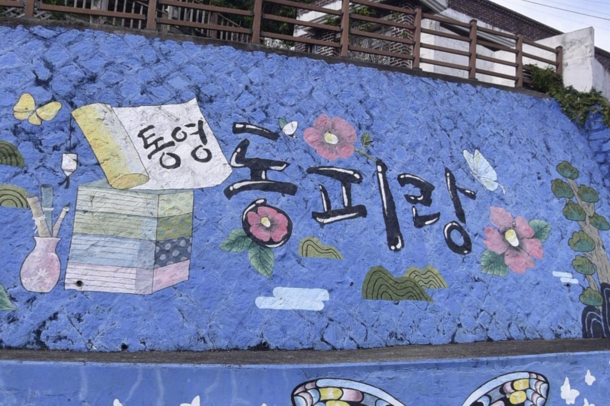
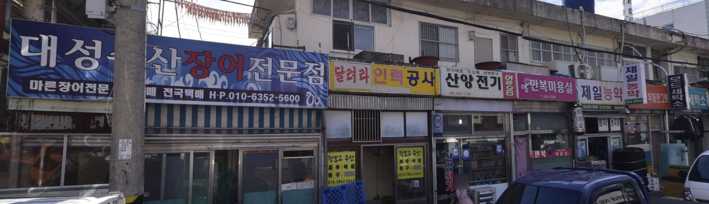
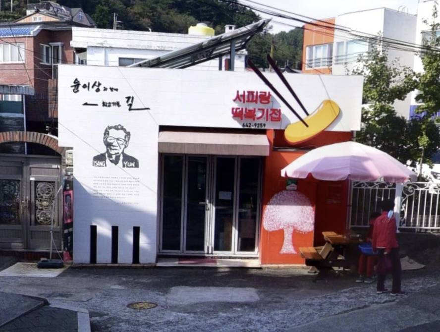
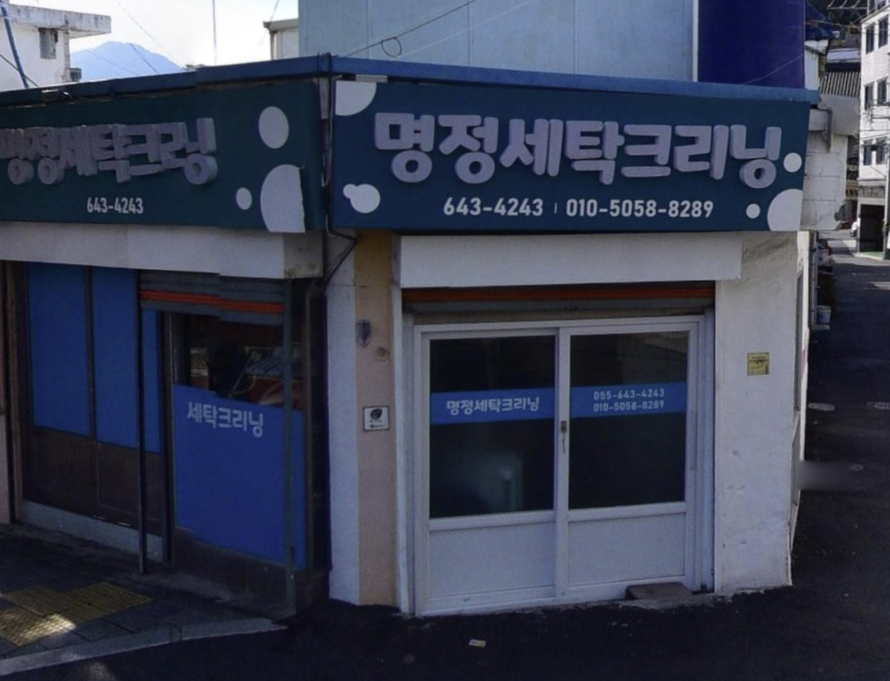
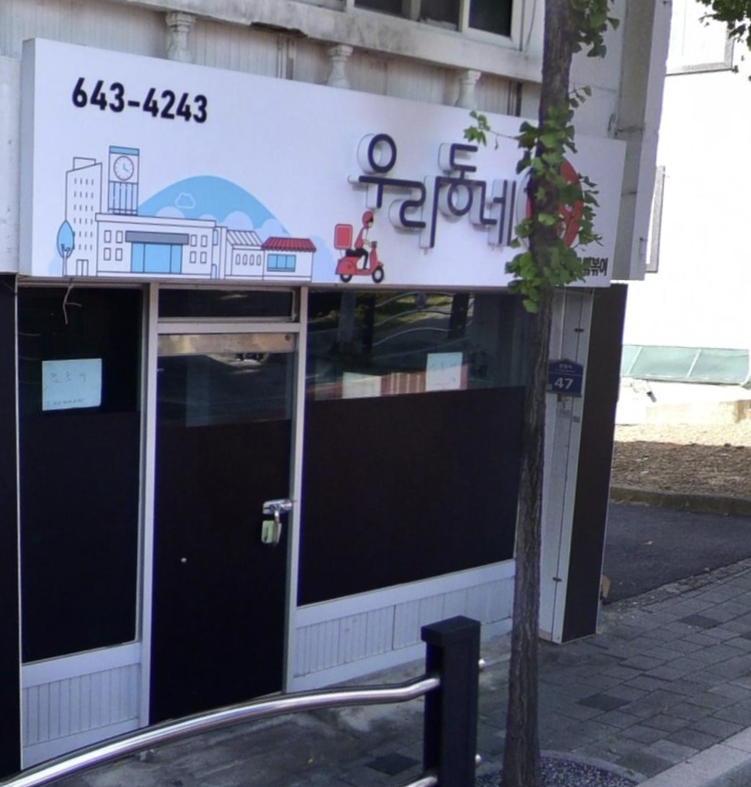

김춘수
시인의 전시관인 만큼 글자에 신명조로 추측되는 폰트를 사용하였다. 가운데에 김춘수 시인의 꽃이란 시가 적혀있어 그의 가장 유명한 시가 무엇인지 건물 외관만 봐도 알 수 있다. 건물 주변에 이끼나 풀들이 자라 오히려 분위기를 더 살린다.
전혁림
미술관인 만큼 글자배치가 매우 독특하다. 전혁림미술관이란 글자 중 몇 개만 자음과 모음 중 하나씩 오른쪽으로 빠져있다. 글자들이 이리저리 배치돼 있기에 색감은 배경에 파란색, 글자는 흰색으로 혼돈을 줄여주었다.
동피랑
통영의 시화, 시목인 동백을 동피랑이란 글자 주변에 배치하였다. 글자는 한국적인 느낌이 난다. 주변에 있는 산이나 나비 그림들이 한국화를 연상시키는 그림체라 더욱 글자를 돋보이게 한다. 통영 하면 바다이기도 해서 배경은 군청색으로 선정한 듯하다.
서호시장
통영에 있는 서호시장 쪽 거리이다 이 거리 자체가 전체적으로 오래된 건물들이라 간판들도 그렇고 복고풍 분위기가 난다. 각자 쓰는 색깔들이 2~3개 정도만 사용하여 전체적으로 정신 사나운 느낌이 들지 않는다.
떡볶이집
흰 배경에 빨간색으로만 가게 이름을 써서 눈에 제일 먼저 들어온다. 옆에 글자를 굳이 읽지 않아도 무엇을 파는 가게인지 알아볼 수 있는 떡볶이 그림도 있다. 가게 밖으로 그림이 튀어나와 있어 입체적인 느낌을 낸다.
세탁
세탁소답게 글자 주변에 배치된 원들이 거품처럼 보이게 하였다. 거품들은 전체적으로 동글하고 푹신한 이미지를 가지고 있기에 명정세탁크리닝이란 글자 또한 푹신하고 귀여운 이미지로 보이는 폰트로 하였다.
우리동네
분식집이다. 우리 동네라는 글자에 맞게 동네와 오토바이를 타고 배달하는 사람이 있는 그림이 왼쪽에 있다. 글자 폰트와 그림체에서 왠지 초등학교 교과서 느낌이 든다. 글자는 검은색으로 하고 포인트 색감은 빨간색, 그 외에 필요한 색들은 푸른빛이 도는 무채색으로 전체적인 색감 배치가 깔끔하다.